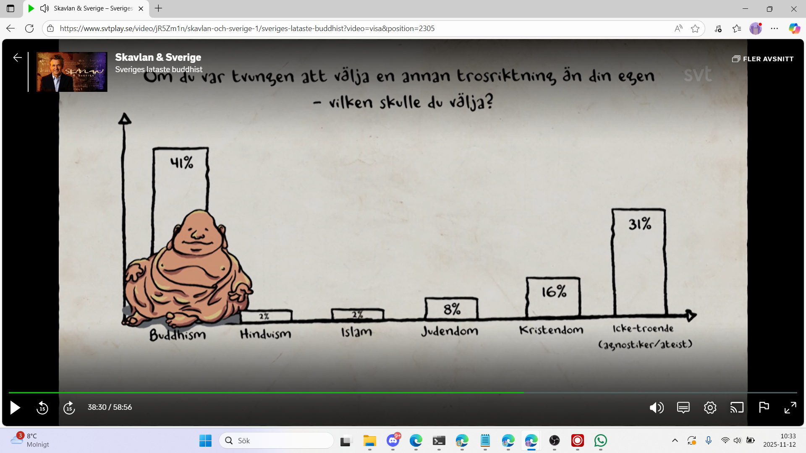
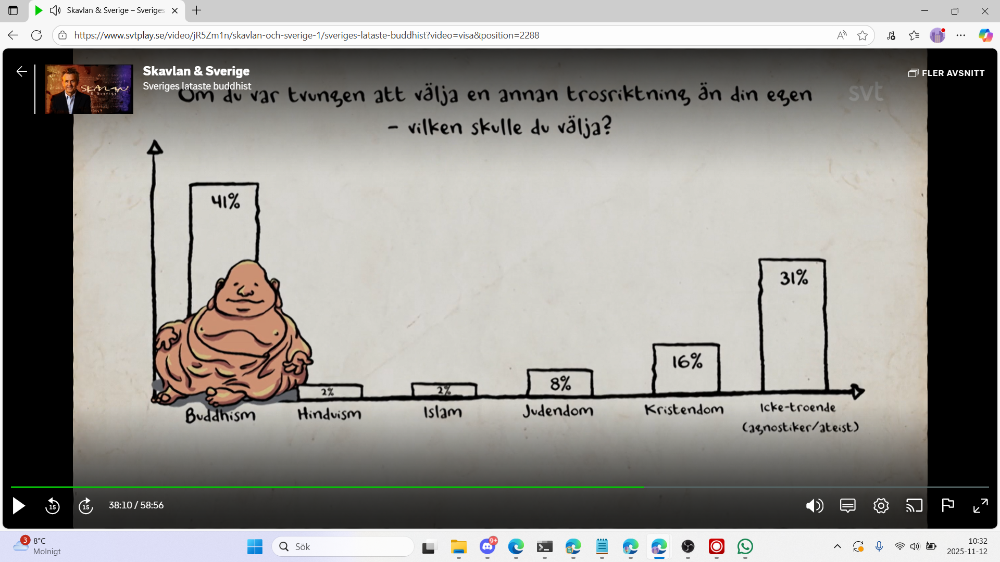

Fredrik Skavlan (host): Vi har frågat svenska folket om deras tankar kring de här frågorna. Den första frågan vi ställde var vilken religion ni skulle välja om ni var tvungna att byta religion. Det var en fråga som vi ställde. 41 % väljer alltså buddhismen.
Fredrik Skavlan (host): Claes, tar du äran för detta?
Claes Malmberg: Det är Malmberg-effekten. Det är självklart. Jag tar ofta åt mig äran för saker som jag inte har inblandning i.
Fredrik Skavlan (host): Du ser ju att hinduismen och islam ligger på typ 2 %.
Fredrik Skavlan (host): Faysa, vad tänker du?
Faysa Idle: Jag tror att det är en stor roll. Det är mest fascinerande att det var din stearin-gubbe. Det kanske ändå hade en betydelse att jag satt och tittade på den. Så ser det ut.
Fredrik Skavlan (host): Jag vill veta i hur hög grad ni där hemma använder kyrkan. Då får vi upp att 78 % använder kyrkan.

Person 1 (possibly Claes Malmberg or Christer Sturmark): Nu blir du glad.
Birgitta Ed: Ja, och inte förvånad.
Faysa: Är det de som är inskrivna eller de som är aktiva?
Fredrik Skavlan (host): Så säger de att de använder kyrkan. Det är en bra fråga. Vad använder de kyrkan till? Jo, livets ceremonier. Bara 18 % av kyrkobesökarna går för att be eller höra gudstjänster.

Birgitta Ed: Fast nu är dop, bröllop och begravning gudstjänster.
Person 1 (possibly Claes Malmberg): Jo, jo.
Birgitta Ed: Det är gudstjänster i Svenska kyrkan. Och i andra kyrkor. Det är det fina med det här. Jag tycker att det är fantastiskt att 82 % av dem som säger att man använder en kyrka, svarar dop, bröllop och begravning.
Fredrik Skavlan (host): Faysa, tycker du att svenskar ber nog?
Faysa Idle: Alltså... Jag vet inte vad jag vill säga. Jag kanske inte får nåt jobb mer.
Christer Sturmark: Får jag säga en sak?
Fredrik Skavlan (host): Ja.
Christer Sturmark: Det är superviktigt att unga och gamla förstår. Den växande generationen förstår att man måste ha en reflekterad, existentiell och etisk hållning. Det har inget med religion att göra. Min 15-åriga son gick på humanistiskt sommarläger. Motsvarigheten till kyrkans konfirmationsläger. Det enda de ägnade sig åt var existentiella samtal – mänskliga rättigheter, moralreflektion och så vidare i en vecka. Det är jätteviktigt för barn i den åldern att göra detta.
Person 1 (possibly Claes Malmberg): Det är alldeles utmärkt... Känns det inte som en alkoholfri öl?
Christer Sturmark: Nej, det där är ju en myt.
Person 2 (possibly Faysa Idle or Claes Malmberg): Jag har inte sagt nåt.
Person 1 (possibly Claes Malmberg): Jag har inte sagt nåt.
Fredrik Skavlan (host): Hade du släppt iväg sonen på ett vanligt konfirmationsläger?
Christer Sturmark: Vanligt? För oss är det vanligt.
Christer Sturmark: Absolut om han hade velat det. Det är bäst att gå på ett humanistiskt konfirmationsläger – men bättre att gå på ett kristet konfirmationsläger än inget alls.
Fredrik Skavlan (host): Vi frågade er om ni faktiskt tror att Jesus är Guds son. Se hur svaret fördelar sig alldeles. Bland de unga under 30 år är det alltså hela 44 % som anser att Jesus är Guds son. Detta är väldigt tydligt, Christer. Väldigt många unga svenskar i dag tror att Jesus är Guds son.
Christer Sturmark: Frågan är om de har förstått frågan över huvud taget.
Fredrik Skavlan (host): Det är en ganska enkel fråga. Det är fortfarande så...
Person 1 (possibly Claes Malmberg): Är det norska problem?
Christer Sturmark: Det är fler som aktivt träder ur Svenska kyrkan varje månad än som aktivt träder in.
Fredrik Skavlan (host): Ja, visst.
Christer Sturmark: Fem gånger.
Fredrik Skavlan (host): Just det. Tror ni att sökandet har ökat? Förstår ni vad jag menar? Är man mer sökande nu?
Birgitta Ed: Det är min bild. Man är mer receptiv, mottaglig.
Person 1 (possibly Christer Sturmark): Ja, det har jag också en bild av.
Fredrik Skavlan (host): Den sista frågan vi ställde var... Här möter Jesus tuff konkurrens. Särskilt bland svenska kvinnor. 37 % av kvinnor tror att vissa har övernaturliga förmågor. 35 % tror på spöken, och bara 8 % tror på helvete. Det är ingen uppsida med helvete.

Fredrik Skavlan (host): Nu ska vi gå vidare i programmet.